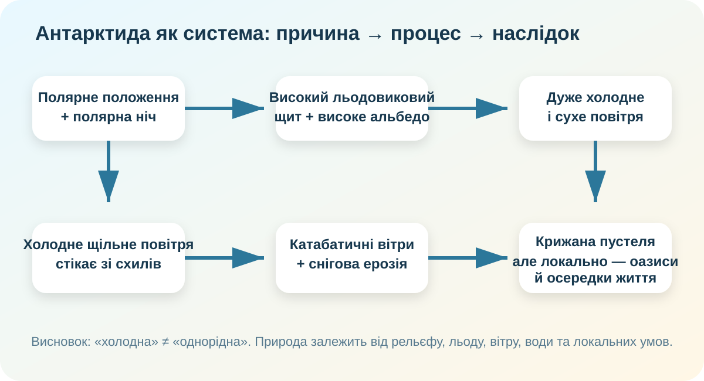

0. Парадокс до теорії
Твердження: «Антарктида не може бути пустелею, бо майже вся вкрита льодом».
1. Реальний вигляд материка: лід ≠ опади

NASA MODIS. Білий колір показує накопичений сніг і лід, але сам по собі не говорить, скільки опадів випадає зараз.
2. Кліматичний детектив: чому тут так холодно і сухо?
мінімум, виміряний на станції Восток 21 липня 1983 року.
орієнтовний діапазон середніх річних температур: від узбережжя до найвищих частин внутрішніх районів.
зафіксовані екстремальні катабатичні вітри за даними Australian Antarctic Program.
Побудуйте причинний ланцюг, а не просто запам’ятайте рекорди.
3. Інтерактив: звідки береться катабатичний вітер?

Короткий відеофрагмент про катабатичний вітер. Під час перегляду зверніть увагу не на швидкість, а на напрям руху повітря від високого холодного центру материка вниз.
4. Водний парадокс: найбільший запас, але майже немає рідкої води
British Antarctic Survey оцінює Антарктичний льодовиковий щит як найбільшу суцільну масу льоду на Землі. Він містить близько 60% світової прісної води. Australian Antarctic Program наводить іншу методику оцінки — близько 90% прісної води Землі у всьому антарктичному льоді. Різниця формулювань — хороший привід перевіряти, що саме рахує джерело.
• льодом льодовикового щита;
• морським льодом (це вже замерзла морська вода);
• підльодовиковими озерами;
• сезонною талою водою;
• дуже солоними озерами в безльодових районах.
Отже, «водні ресурси» тут не тотожні доступній питній воді.
5. Антарктична пустеля та оазис: не протилежності, а різні масштаби
Безльодові ділянки займають лише приблизно 0,4% Антарктиди. Серед них — прибережні оазиси, скелі, нунатаки та осипи. Саме тут концентрується значна частина наземного життя.
NASA описує Сухі долини Мак-Мердо як одне з найекстремальніших безльодових середовищ Землі. Тут є гіперсолоні водойми, зокрема Дон-Жуан, вода якого може залишатися рідкою завдяки дуже високій солоності.
| Ознака | Крижана пустеля | Антарктичний оазис / безльодова ділянка |
|---|---|---|
| Покрив | Сніг і лід домінують | Оголені породи, ґрунт, локальна вода |
| Волога | Дуже мало опадів; вода переважно тверда | Можлива тала або солона рідка вода |
| Життя | Наземне життя дуже розріджене | Локальні осередки мохів, лишайників, мікробів, безхребетних |
| Головний висновок | Природа Антарктиди мозаїчна навіть за загальної екстремальності. | |
6. Українська Антарктика: «Академік Вернадський» як реальна лабораторія
Українська станція «Академік Вернадський» розташована на острові Галіндез, Аргентинські острови, приблизно на 65°15′ пд. ш., 64°15′ зх. д. Вона працює цілий рік; Національний антарктичний науковий центр організовує щорічні експедиції та дослідження.
7. Проблема охорони: чому найцікавіші місця часто треба захищати найсильніше?
Безльодові ділянки займають мізерну частку материка, але саме там одночасно концентруються біорізноманіття, зручні місця для станцій і великий науковий інтерес.
8. Проміжний висновок — і тільки потім теорія
Дайте відповідь одним абзацом: чому слово «пустеля» коректне для Антарктиди, хоча вона вкрита льодом, і чому це не означає, що весь материк природно однаковий?
9. Теорія після дослідження
Чому Антарктида найхолодніша
Полярне положення означає низький кут падіння сонячних променів і полярну ніч. Висока середня висота поверхні додатково знижує температуру, а сніг і лід мають високе альбедо й відбивають значну частину сонячної енергії.
Чому найсухіша
Холодне повітря здатне утримувати мало водяної пари. У внутрішніх районах випадає дуже мало опадів, тому за кількістю опадів це справжня полярна пустеля. Накопичений за тисячі років лід не є доказом сучасної вологості.
Чому найвітряніша
Над високим льодовиковим щитом повітря сильно охолоджується, стає щільнішим і стікає схилами до узбережжя. Так виникають катабатичні вітри.
Чому природа не однорідна
Локальний рельєф, оголені породи, сонячне прогрівання, солоність, тала вода, близькість океану та біологічні зв’язки створюють маленькі осередки життя — антарктичні оазиси й інші безльодові ділянки.
10. CER — доведіть тезу
Теза: «Унікальність природи Антарктиди створює не один чинник, а взаємодія географічного положення, льодовикового щита, атмосфери, рельєфу й локальної наявності рідкої води».
11. Домашнє завдання
Створіть коротке досьє «Одна антарктична аномалія»: оберіть катабатичний вітер, сухі долини, підльодовикове озеро, антарктичний оазис або озонові спостереження на «Вернадському». Дайте: 1 карту/знімок; 2 факти; 1 причинний ланцюг; 1 посилання на надійне джерело.
12. Тест — 10 балів
Тест відкривається лише після введення даних учня/учениці.